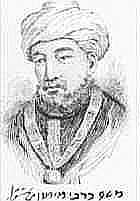
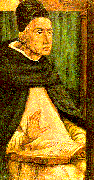
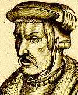
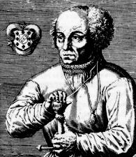
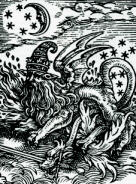
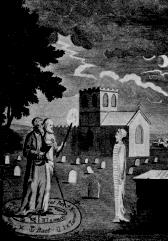
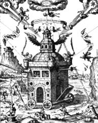
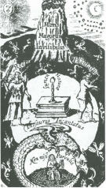

|
Maimonides  Moses Maimonides Moses Maimonides (1135-1204), the greatest Jewish medieval philosopher, lived in Cairo although he was born in Spain. There he was the chief physician to the vizier of the Sultan. Continuing the allegorical method of Philo, and well-steeped in the Cabala, he attempted to reconcile Jewish thought with Greek Philosophy. He held that the celestial bodies were living, animated beings and that the heavenly spheres were conscious and free. In his Guide to the Perplexed, written in Arabic in 1190, he states that all philosophers are agreed that the inferior world, of earthly corruption and degeneration, is ruled by the natural virtues and influences of the more refined celestial spheres. He even felt that every human soul has its origin in the soul of the celestial sphere. Maimonides believed in a human faculty of natural divination and that in some men "imagination and divination are so strong that they correctly forecast" the greater part of future events. Nevertheless he upholds human free will and human responsibility for our actions. While he did believe in angels, he would not accept the existence of demons -- saying that evil was mere privation. Alleged cases of possession by demons were diagnosed by him as simple melancholy. In accordance with Mosaic law, he accepted injunctions against the occult practices of idolatry and magic. Yet he maintained that any practices known to have a natural cause or proved efficacious by experience, as in the use of medicinal charms, were permissible. This differentiation between demonic and natural magic was to be emphasized by scholars for several centuries. Today we have little difficulty in finding
fault with the scientific methodology of even the greatest thinkers of
these times, and there is no doubt in my mind the professed magi of medieval
and Renaissance times were often the gullible dupes of many superstitious
fallacies. However magic was also the art of bringing divine life into
physical manifestation. We can see throughout cultural history that the
magi were artists who were able to infuse a delicately balanced state of
consciousness into their lives and work --one that opened the intuition
to the deepest levels of being and then exposed the insights attained to
intellectual scrutiny and carefully controlled craftsmanship. It is precisely
a process of this sort that underlies all genius. As history unfolds we
shall cite other examples in which the development of this creative state
of consciousness is clearly linked to esoteric or spiritual practices.
Albertus Magnus  Albertus Magnus The leading figure in thirteenth century learning was Albertus Magnus, a Dominican friar who was finally canonized as a saint in 1931. Albertus, who has left us eight books on physics, six on psychology, eight on astronomy, twenty-six on zoology, seven on botany, five on minerals, one on geography, and three on life in general, was strongly influenced by Aristotle. Believing god acts through natural causes in natural phenomena, he conducted experiments in the field of animal behavior and thus became an important forerunner of modern experimental science. He was known to have had miraculous visions since childhood. He was also an ardent philosopher of magic and expressed a very positive attitude toward the magi of the Bible as "masters who philosophize about the universe and ... search the future in stars." This view still persists in the Roman Catholic Church. For Albertus, heaven and the stars are
the mediums between the primal cause, or Aristotle's prime mover, and matter.
All things produced in nature or in art are influenced by celestial virtues.
The human being is an images mundo, or image of the universe, similar in
conception to the hermetic notion of human as a microcosm. His natural
magic thus made use of nature and the stars. It included astrology to find
a favored hour for beginning a comtemplated act, or an act of contemplation.
And Albertus was clearly interested in the transmutation of metals as well
as the use of psychic abilities to find metals within the earth. Towards
this last end, he recommended employing potions to clog and stupefy the
senses, thereby producing visions. He also advocated dream interpretation,
the use of herbs and magical stones, animal potions and images engraved
on gems. When these practices did not work, Albertus maintained the defects
were not to be found in the science of natural magic but in the souls of
those who abused it.
Renaissance Explorations Cornelius Agrippa  Cornelius Agrippa As for the art of invoking spirits, Cornelius Agrippa, a magus whose influence was considerable in his day, has left us a description: If you would call any evil Spirit to the Circle it first behooveth us to consider and to know his nature, to which of the planets he agreeth, and what offices are distributed to him from the planet.Occult scholarship attempted to systematize everything from tastes, smells, colors, and body parts, to herbs, charms, spirits and dreams. It was an imaginative effort based primarily on introspection and reflection, but without proper standards of measurement and adequate means of correcting error. Nevertheless deep levels of the psyche were involved in this effort to condense esoteric knowledge into meaningful symbols. This in-depth study of the intuitive and emotional connections between consciousness and the external world has a built-in difficulty in that the exact conditions necessary to create subtle intuitions and visions do not readily repeat themselves. Paracelsus  Paracelsus Foremost among the occult scientists of his age was Phillipus Aureolus Theophrastus Bombastus von Hohenheim otherwise known as Paracelsus. He was born in Switzerland in 1493 and spent his entire life wandering throughout Europe and acquiring a great reputation for medical ability unorthodox views and a testy personality. For example, he was known to have publicly burned established medical texts. It is very difficult to distinguish his work from that of his students, interpreters, translators and editors. Very little of his writing was published in his own lifetime and few of his original manuscripts survive today. His German writings were only noticed for their originality about twenty years after his death when scholars saw in him an alternative to stale medieval and Latin learning. Today he is recognized as the first modern medical scientist, as the precursor of microchemistry, antisepsis, modern wound surgery, and homeopathy. He wrote the first comprehensive work on the causes, symptoms and treatment of syphilis. He proposed epileptics should be treated as sick persons and not as lunatics possessed by @emons. He studied bronchial illnesses in mining districts and was one of the first people to recognize the connection between an industrial environment and certain types of disease. Notwithstanding this accurate scientific bent, his work is in close accord with the mystical alchemical tradition. He wrote on furies in sleep, on ghosts appearing after death, on gnomes in mines and underground, of nymphs, pygmies, and magical salamanders.  Magical Salamander from Paracelsus' Auslegung von 30 magischen Figuren His world view was animistic. Invisible
forces were always at work and the physician had to constantly be aware
of this fourth dimension in which he was moving. He utilized various techniques
for divination and astrology as well as magical amulets, talismans, and
incantations. He believed in a vital force radiating around every person
like a luminous sphere and acting at a distance. He was also credited with
the early use of what we now know as hypnotism. He believed that there
was a star in each human being.
John Dee  John Dee and Edmund Kelly evoking a spirit Another important occult scholar was John Dee (1527-1608) who was one of the most celebrated and remarkable men of the Elizabethan age. His world was half magical and half scientific; he was noted as a philosopher, mathematician, technologist, antiquarian, as well as a teacher and astrologer. He was the first Englishman to encourage the founding of a royal library. He personally owned the largest library in sixteenth century England, which contained over 4,000 volumes. He held a large influence over the intellectual life of his times. He wrote the preface for the first English translation of Euclid and is given credit for the revival of mathematical learning in renaissance England. According to Lynn Thorndike in The History of Magic and Experimental Science: For John Dee the world was a lyre from which a skillful player could draw new harmonies. Every thing and place in the world radiated force to all other parts and received rays from them. There were also relations of sympathy and antipathy between things. Species, both spiritual and natural, flowed off from objects with light or without it, impressing themselves not only on the sight but on the other senses, and especially coalescing in our imaginative spirit and working marvels in us. Moreover, the human soul and specific form of every thing has many more and more excellent virtues and operations than has the human body or the matter of the thing in question. Similarly the invisible rays of the planets or their secret influence surpass their sensible rays or light.
This same fusion of world views is to be found in the teachings of the Rosicrucian movement, which caused quite a public stir in seventeenth century England, France, Italy and Germany. Only a limited number of men, most notably John Dee's student Robert Fludd, openly identified themselves as Rosicrucians. Most of the manifestos that caused a great uproar were published anonymously. Emphasizing earlier notions common to hermeticism, alchemy and the Cabala, the Rosicrucian documents proclaimed the existence of a hidden brotherhood of scholars and explorers who were united in teaching the deepest mysteries of nature, free from religious and political prejudice. The following excerpt is taken from the last paragraph of Fame of the Fraternity of the Rosie Cross -- an early manifesto first printed in 1614 and translated into English by Thomas Vaughan in 1652: And although at this time we make no mention either of our names, or meetings, yet nevertheless every ones opinion shal assuredly come to our hands, in what language soever it be; nor any body shal fail, who so gives but his name to speak with some of us, either by word of mouth, or else if there be some lett in writing. And this we say for a truth, That whosoever shal earnestly, and from his heart, bear affection unto us, it shal be beneficial to him in goods, body and soul; but he that is false-hearted, or only greedy of riches, the same first of all shal not be able in any manner of wise to hurt us, but bring himself to utter ruine and destruction. Also our building (although one hundred thousand people had very near seen and beheld the same) shal for ever remain untouched, undestroyed, and hidden to the wicked world, sub unibra alarum tuarum Jehova.,At this same time Sir Francis Bacon (1561-1626) in England was also calling for a brotherhood that would foster the "advancement of learning". His effort ultimately led to the founding of the Royal Society in 1660. During his association with King James in England, Bacon was careful never to publicly connect himself with the Rosicrucians or any other occult movements. However, in a work published after his death, The New Atlantis, he describes his own version of a utopian society, revealing his sympathies and possible connection with this movement, and the Invisible College. There are those today who believe Bacon to have been a spiritual adept of the highest rank -- founder of the Rosicrucians, secret author of the works attributed to William Shakespeare, the prime mover behind the English rennaissance, a man who contributed thousands of words to the English language and who first articulated the spiritual ideals upon which the United States of America was founded. In The New Atlantis, the governor of the invisible island of which Bacon writes, describes the preeminent reason for the greatness of his society: It was the erection and institution of an order, or society, which we call Salomon's House; the noblest foundation, as we think, that was ever upon the earth, and the lantern of this kingdom. It is dedicated to the study of the works and creatures of God. Some think it beareth the founder's name a little corrupted, as if it should be Solamona's House. But the records write it as it is spoken. So as I take it to be denominate of the king of the Hebrews, which is famous with you, and no stranger to us; for we have some parts of his works which with you are lost; namely, that Natural History which he wrote of all plants, from the Cedar of Libanus to the moss that groweth out of the wall; and of all things that have life and motion. This maketh me think that our king finding himself to symbolize, in many things, with that king of the Hebrews (which lived many years before him) honoured him with the title of this foundation. And I am the rather induced to be of this opinion, for that I find in ancient records, this order or society is sometimes called Salomon's House, and sometimes the College of the Six Days' Works; whereby I am satisfied that our excellent king had learned from the Hebrews that God had created the world, and all that therein is, within six days: and therefore he instituted that house, for the finding out of the true nature of all things (whereby God ought have the more glory in the workmanship of them, and men the more fruit in the use of them), did give it also that second name....The Invisible College was an important foundation of the Rosicrucian teaching.  The Rosicrucian Invisible College It was a building with wings, which existed nowhere and yet united the entire secret movement. The high initiates of this society, the R. C. Brothers, were said to be invisible and were able to teach their knowledge of a higher social and scientific order to worthy disciples who themselves became invisible. The symbolism of the Invisible College is very complex and further complicated by the social furor that resulted from it. As adventurers and scholars desiring a new social order sought to make contact with the fabled R. C. Brothers, an increasing public outcry resulted in witchhunts and persecutions. In one sense, the Invisible College refers to that type of teaching and inspiration that occurs to one in dreams. An allegory, written in 1651 by Thomas Vaughan, is quite suggestive of this theory:  The Invisible Magic Mountain There is a mountain situated in the midst of the earth or center of the world, which is both small and great. It is soft, also above measure hard and stony. It is far off and near at hand, but by the providence of God invisible. In it are hidden the most ample treasures, which the world is not able to value. This mountain -- by envy of the devil, who always opposes the glory of God and the happiness of man is compassed about with very cruel beasts and ravening bird -- which make the way thither both difficult and dangerous. And therefore until now -- because the time is not yet come the way thither could not be sought after nor found out. But now at last the way is to be found by those that are worthy -- but nonetheless by every man's self-labor and endeavors.In another sense, the Invisible College referred to an influential, though hidden, political, artistic, and scientific movement which included Francis Bacon and other notable Renaissance figures dedicated to the teachings of the perennial philosophy. For example there is evidence connecting Robert Boyle, who developed the laws relating the pressure of a gas at a fixed temperature to the inverse of its volume, with the college. Sir Isaac Newton also indicated an awareness of this movement.
References . Ibid., pp. 517-592. . Sayed Idries Shah, The Secret Lore of Magic, New York: The Citadel Press, 1970, pp. 22-29. Shah is quoting from Turner's eighteenth century translation of Agrippa. . Lynn Thorndike, op. cit., Vol. V., 617-651. . Jolande Jacobi (ed.), Paracelsus, Selected Writings. Princeton, NJ: Princeton University Press, 1951. . Peter J. French, John Dee. London: Routledge & Kegan Paul, 1972. This book has helped to reestablish Dee's once-forgotten importance as a renaissance figure. . Francis A. Yates, The Rosicrucian Enlightenment. London: Routledge & Kegan Paul, 1972. A fascinating, yet scholarly, history regarding the controversial origins of the famous Rosicrucians. . "Under the shadow of thy wings, Jehova." . Paul M. Allen (ed.), A Christian Rosenkreutz Anthology. Blauvelt, NY: Rudolf Steiner Publications, 1974, p. 179. . Francis Bacon, "Selections From New Atlantis," in Edward A. Tiryakian (ed.), On the Margin of the Visible. New York: John Wiley and Sons, 1974, p. 143. This volume is the first product of a wave of scholars who are attempting sociological analyses of esoteric movements, modern and historical. . Francis Yates, The Rosicrucian Enlightenment. . Thomas Vaughan, "The Holy Mountain, A Rosicrucian Allegory," in A Christian Rosenkreutz Anthology. For a modern version of the same story see Rene Daumal, Mt. Analogue. San Francisco: City Lights Books, 1968. |